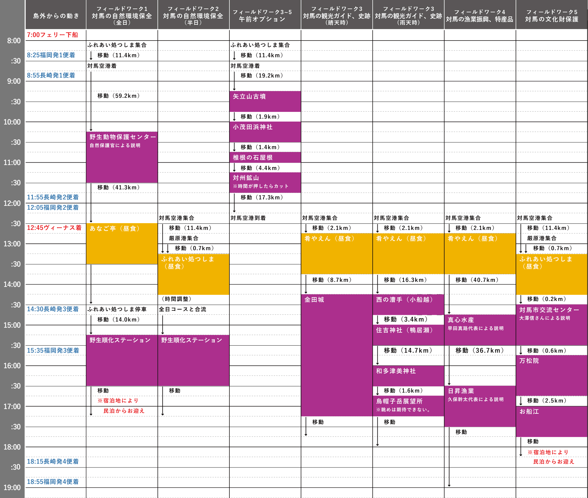
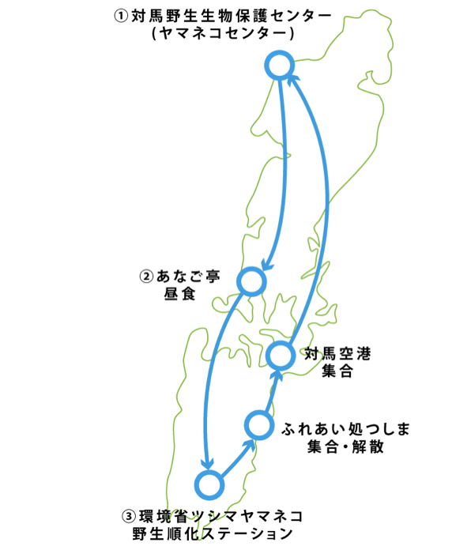
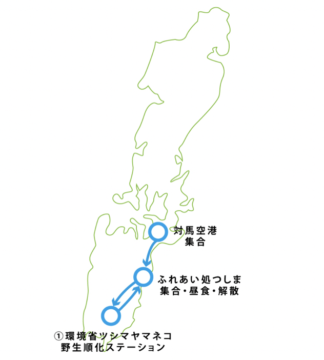
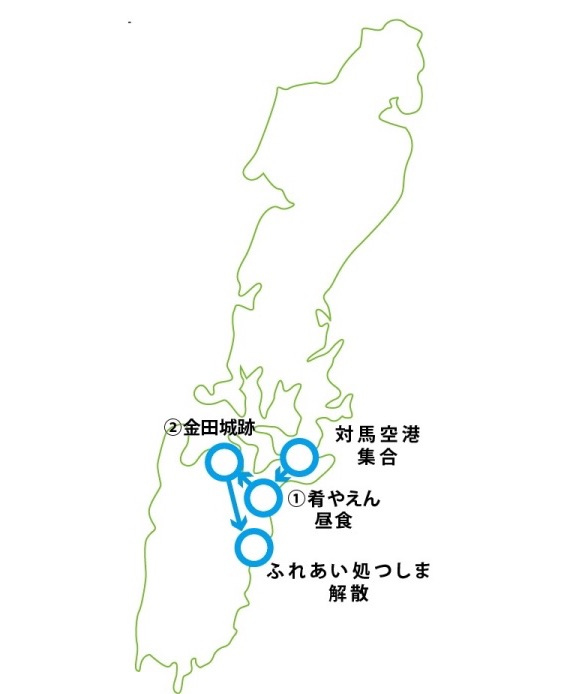
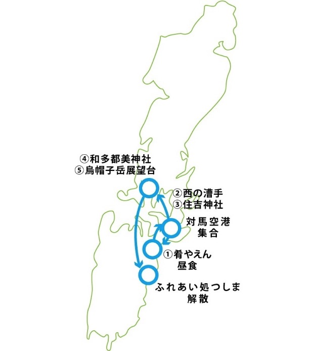
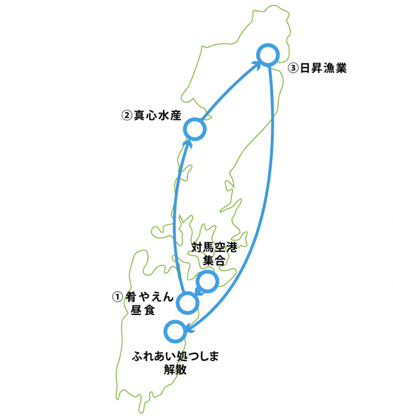
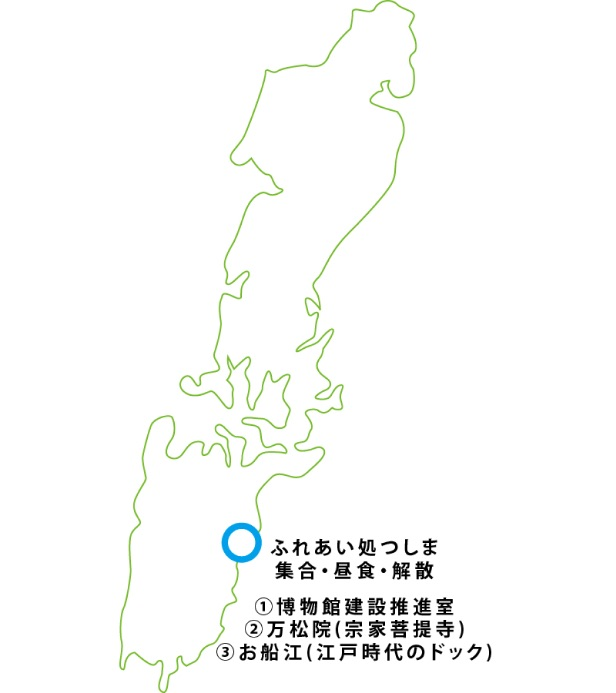
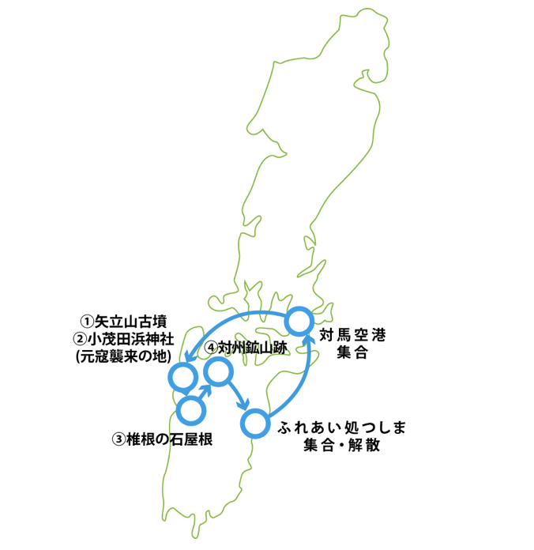

フィールドワーク
フィールドワーク行程
フィールドワーク1
対馬の自然環境保全(全日)コース
フェリーで来島された方は徒歩でふれあい処に集まってください。その後、福岡1便、長崎1便の飛行機で来島された方を迎えに対馬空港に向かいます。 対馬空港からは佐護のヤマネコセンターに向かいます。昼食は対馬特産黄金あなごを味わいます。 午後は半日コースの方と合流して野生順化ステーションでヤマネコの順化についてのレクチャを受けます。その後、厳原中心部で解散となります。
フィールドワーク2
対馬の自然環境保全(半日)コース
福岡2便、長崎2便の飛行機で来島の方は対馬空港までお迎えに上がります。ジェットフォイルで来島の方は徒歩でふれあい処に集まってください。 ふれあい処で対馬の郷土料理を味わった後、全日コースの方と合流して野生順化ステーションでヤマネコの順化についてのレクチャを受けます。その後、厳原中心部で解散となります。

フィールドワーク3
対馬の観光ガイド・史跡コース
晴天時
＜晴天時＞奈良時代の朝鮮式山城と明治時代の砲台が残る金田城をめぐるコースです。福岡2便、長崎2便で来島の方は対馬空港までお迎えに上がります。対馬の魚介を味わった後、金田城に移動、城山を登ります。下山後は厳原中心部で解散となります。
雨天時
＜雨天時＞対馬の神話、伝説の地をめぐるコースです。福岡2便、長崎2便で来島の方は対馬空港までお迎えに上がります。 対馬の魚介を味わった後、海運の要所であった西の漕手、住吉神社を見学し、竜宮伝説が残る和多都美神社を訪れます。天気が良くなれば烏帽子岳展望台から浅茅湾のリアス地形をご確認いただけます。その後、厳原中心部で解散となります。
フィールドワーク4
対馬の漁業振興・特産品コース
地場産業の活性化に取り組む方を訪ねるツアーです。福岡2便、長崎2便で来島の方は対馬空港までお迎えに上がります。対馬の魚介を味わった後、海産物の6次産業化、地域力発信に力を入れている真心水産を訪れます。比田勝港に近い日昇漁業ではIターンから漁業就業、企業に至った経緯などを伺います。その後、厳原中心部で解散となります。
フィールドワーク5
対馬の文化財保護コース
対馬の文化財と建設中の博物館についてのレクチャと実地検分を兼ねたコースです。福岡2便、長崎2便で来島の方は対馬空港までお迎えに上がります。 ジェットフォイルで来島の方はふれあい処まで徒歩でお願いします。ふれあい処で対馬の郷土料理を味わった後、博物館建設推進室の方から建設中の博物館に関するレクチャをいただきます。 その後、宗家の菩提寺である万松院、江戸時代のドックであるお船江をめぐります。最後は厳原中心部で解散となります。
フィールドワークオプション
午前オプション
フィールドワーク3~5を希望される方で、福岡、長崎1便およびフェリーでの来島をされる方にはオプションコースをご用意しています。元寇襲来の地など史跡を巡るコースになっています。別途料金は発生しません。
フィールドワークで立ち寄るスポット
フィールドワークで立ち寄る個々のスポットについては別ページ「つしまっぷ」にて紹介しています。
フィールドワーク詳細
フィールドワークの詳細については論文募集要項に記載しています。
問い合わせ
研究会の内容やスケジュール、参加に際して気になる点がありましたら、下記アドレスまでお問い合わせください。
ikeko20471120[at]gmail.com
送信時には[at]を＠に変換してください。
また、細かな情報は研究会のFacebookページに掲載しております。ご参照のうえ、コメントを投稿いただくことで問い合わせをすることもできます。